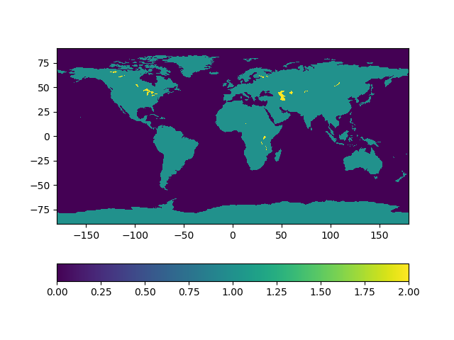
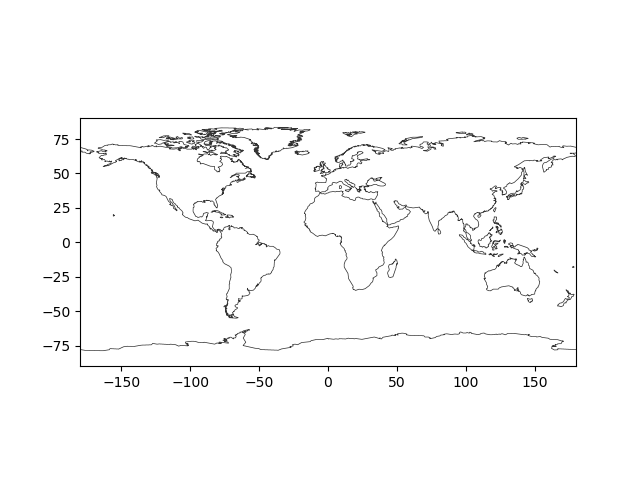
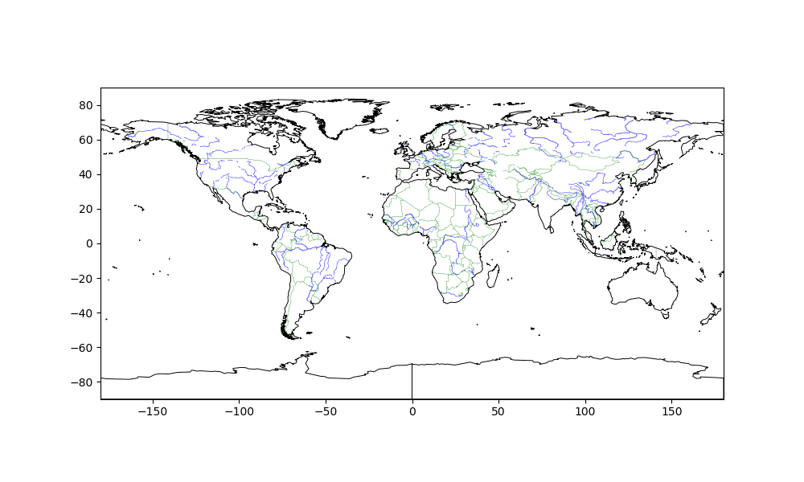

GeoDatasets
The aim of this package is to give access to common geographics datasets such as:
- location of shoreline
- location of rivers
- major political boundaries
Land-sea-lake mask
GeoDatasets.landseamask — Function.lon,lat,data = GeoDatasets.landseamask(;resolution='l',grid=5)Load the land-sea-lake raster from basemap: 0 is ocean, 1 is land and 2 is lake. grid is the resolution in arc minutes and should be either 1.25, 2.5, 5 or 10. The parameter resolution should be either 'c','l','i','h' or 'f' (standing for crude, low, intermediate, high and full resolution)
The data is downloaded from basemap.
The data is originally from GMT and distributed under the terms of the GPL licences.
using GeoDatasets
lon,lat,data = GeoDatasets.landseamask(;resolution='c',grid=5)Example plot of the coarse resolution land-sea-lake mask (rasterized at 5 arc minutes).
using PyPlot, GeoDatasets
lon,lat,data = GeoDatasets.landseamask(;resolution='c',grid=5)
pcolormesh(lon,lat,data')
colorbar(orientation="horizontal")
gca().set_aspect(1)┌ Warning: No working GUI backend found for matplotlib
└ @ PyPlot ~/.julia/packages/PyPlot/4wzW1/src/init.jl:165
[ Info: Downloading file 'lsmask_5min_c.bin' from 'https://raw.githubusercontent.com/matplotlib/basemap/master/lib/mpl_toolkits/basemap/data/lsmask_5min_c.bin' with cURL.
Coast-line from this raster data:
using PyPlot, GeoDatasets
lon,lat,data = GeoDatasets.landseamask(;resolution='c',grid=5)
contour(lon,lat,data',[0.5],colors=[[0.2,0.2,0.2]],linewidths=0.5)
gca().set_aspect(1)
Global Self-consistent, Hierarchical, High-resolution Geography Database (gshhg)
GeoDatasets.gshhg — Function.segments = GeoDatasets.gshhg(res,level::Integer)
segments = GeoDatasets.gshhg(res,levels::AbstractArray{<:Integer})Extract a list of coastlines from the Global Self-consistent, Hierarchical, High-resolution Geography Database (about 150 Mb) at the resolution res ('f','h','i','l' or 'c') and the level level (see below). An array of multiple levels can also be provided as the parameter levels. segments is a vector of tuples representing a closed shoreline. Each tuple is composed by a longitude and latitude vector.
The GSHHG is released under the GNU Lesser General Public License (Version 3) and is described in Wessel, P., and W. H. F. Smith, A Global Self-consistent, Hierarchical, High-resolution Shoreline Database, J. Geophys. Res., 101, 8741-8743, 1996.
The GSHHG database integrates the CIA World Data Bank II (WDBII) for political borders and rivers.
Resolution is one of the following:
res | Resolution |
|---|---|
| f | Full resolution |
| h | High resolution |
| i | Intermediate resolution |
| l | Low resolution |
| c | Crude resolution |
The shoreline data are distributed in 6 levels:
level | |
|---|---|
| 1 | Continental land masses and ocean islands, except Antarctica |
| 2 | Lakes |
| 3 | Islands in lakes |
| 4 | Ponds in islands within lakes |
| 5 | Antarctica based on ice front boundary |
| 6 | Antarctica based on grounding line boundary |
If the 2nd parameter levels is ommited, then level 1 and 5 are loaded.
GeoDatasets.WDBII_river — Function.segments = GeoDatasets.WDBII_river(res,level::Integer)
segments = GeoDatasets.WDBII_river(res,levels::AbstractArray{<:Integer})Extract rivers from the WDBII database. See GeoDatasets.gshhg for more information.
The river database comes with 11 levels:
level | |
|---|---|
| 1 | Double-lined rivers (river-lakes) |
| 2 | Permanent major rivers |
| 3 | Additional major rivers |
| 4 | Additional rivers |
| 5 | Minor rivers |
| 6 | Intermittent rivers - major |
| 7 | Intermittent rivers - additional |
| 8 | Intermittent rivers - minor |
| 9 | Major canals |
| 10 | Minor canals |
| 11 | Irrigation canals |
GeoDatasets.WDBII_border — Function.segments = GeoDatasets.WDBII_border(res,level::Integer)
segments = GeoDatasets.WDBII_border(res,levels::AbstractArray{<:Integer})Extract borders from the WDBII database. See GeoDatasets.gshhg for more information.
The political boundary data come in 3 levels:
level | |
|---|---|
| 1 | National boundaries |
| 2 | Internal (state) boundaries for the 8 largest countries only |
| 3 | Maritime boundaries |
If the 2nd parameter level is ommited, then level 1 (National boundaries) are loaded.
using PyPlot, GeoDatasets
res = 'c'
# coastline
for (lon,lat) in GeoDatasets.gshhg(res,[1,5])
plot(lon,lat,"-",color="k", linewidth = 0.7)
end
# rivers
for (lon,lat) in GeoDatasets.WDBII_river(res,[1,2])
plot(lon,lat,"b-",alpha = 0.5, linewidth = 0.5)
end
# borders
for (lon,lat) in GeoDatasets.WDBII_border(res,1)
plot(lon,lat,"g-",alpha = 0.8, linewidth = 0.3)
end
gca().set_aspect(1)
xlim(-180,180)
ylim(-90,90)[ Info: Downloading file 'gshhg-shp-2.3.7.zip' from 'http://www.soest.hawaii.edu/pwessel/gshhg/gshhg-shp-2.3.7.zip' with cURL.